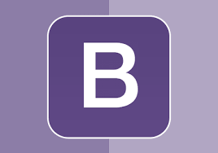
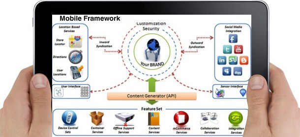

Ceci est un framework propre, minimaliste et rapide
Agency
Wahou c'est super chouette les frameworks
Ceci est un framework pris au hasard mais je le trouve super beau !
CodeIgniter
Spoiler : le site Mini Projet de BDD l'utilise.
CodeIgniter est un framework PHP libre de droit servant à faciliter la création d'applications Web. Il est apprécié pour sa légerté et sa (relative ...) simplicité d'utilisation.
Ulkit
C'est bleu
Ulkit à l'avantage d'être simple de compréhension en étant épuré. Le bleu et le blanc se contraste parfaitement.
Ruby on Rails
Ruby c giga cool comme truc
Ruby on Rails est un puissant outil de développement particulièrement adapté pour les projets d’applications web et sites web innovants.
De nombreuses applications web l'utilise comme: Twitter, Shopify, Github(lol), et beaucoup d'autres !
Pour resumer, Ruby on Rails est un Framework vraiment cool qui permet de faire beaucoup de choses !
Kube UI Framework
Kube est un framework simple et organisé, rapide à utiliser; Il est indépendant d'autres frameworks. Il pèse environ 110Kb au total (JS+CSS). Chaque composant et décrit et des exemples sont mis à disposition.
Bootstrap
Bootstrap est sans doute la plus grande référence des frameworks front-end. Qui plus est, il existe de nombreux templates Bootstrap pour créer un site web.

Spectre.css
Vous avez déjà vu ça quelque part...
Blablablablabla...
Slim
Slim is another popular PHP micro-framework that helps developers quickly create simple but powerful web applications and APIs.
Reasons to use Slim
Just like PHPixie, Slim is easy to learn. PHP developers use Slim to develop RESTful APIs and web services.
Key features include URL routing, session, and cookie encryption, client-side HTTP caching, and more.
It’s the best framework for a small web application that doesn’t necessarily require a full-stack PHP framework. In addition, active maintenance and friendly documentation make Slim super user-friendly.
How hard are PHP frameworks to maintain?
As part of your PHP workflow, it’s important to track errors. Raygun Crash Reporting works with most PHP frameworks and will accurately help you detect and diagnose software errors. With smart PHP error monitoring software from Raygun, you can be alerted to issues affecting your users the second they happen.
Which PHP framework is right for you?
Using PHP frameworks simplifies the development process, which helps to minimize workload. Each framework has its own strengths and weaknesses, and they all vary in terms of community, documentation, and the database they support.
As such, the decision on the best framework to use depends on various factors such as security, ease of use, scalability, documentation, and more. So, start by understanding the requirements of the project or application you want to develop. Then, choose the most suitable PHP framework from this list. You can’t go wrong.
INK
Create responsive web interfaces quick and efficiently.
INK est un framework se spécialise dans la partie front des sites.
Framework application mobile
Connaissez-vous quelqu’un qui n’a pas encore de smartphone ? Nous, non ! Les nouvelles habitudes de consommation ont fait du mobile un élément incontournable. Les chiffres parlent d'eux-mêmes, 90 milliards d’applications ont été téléchargées en 2016, un chiffre en croissance de 15 % depuis l’année précédente. Un énorme potentiel pour les entreprises qui souhaitent se diriger vers ce marché prometteur. Ce qui suppose donc… de développer une application ! Pour cela, il vous faudra alors choisir un framework mobile. Entre React Native, Ionic et PhoneGap, vers lequel votre cœur doit-il pencher ? SOLUTI fait le point !
Framework mobile #1 : Ionic
Ionic, qu’est-ce que c’est ?
Ionic, c’est un framework hybride, développé par l’entreprise du même nom. Il exploite les technologies web principalement, et repose sur le langage Javascript.
Les avantages d’Ionic
Ionic est un framework éprouvé, qui a le bon goût d’offrir un ensemble d’outils de testing pas mal fichus. Autre point positif : il est simple à appréhender, à apprendre et à mettre en place. De plus, son utilisation facilite le recrutement, car Ionic repose, on l’a dit plus haut, sur des technologies web bien connues des développeurs.
Les inconvénients d’Ionic
Jamais deux sans trois : Ionic est donc axé sur les technologies web… et logiquement, pas tellement sur les technologies mobiles. Il ne prend pas en compte l’UX native du mobile. Légèrement problématique, quand on pense que l’expérience utilisateur doit être au centre des développements en 2017 – une tendance qui est partie pour durer, on vous l’assure. Il peut ainsi y avoir des incompatibilités de plugins entre les systèmes d’exploitation. Et comme ils sont compliqués à créer, Ionic n’est pas forcément notre favori…
